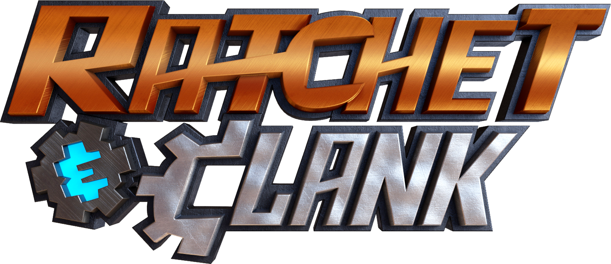
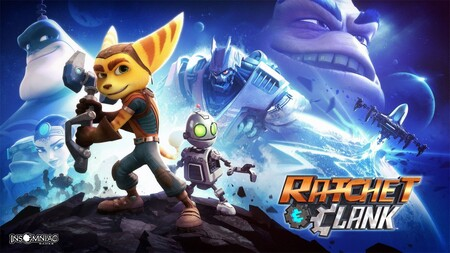
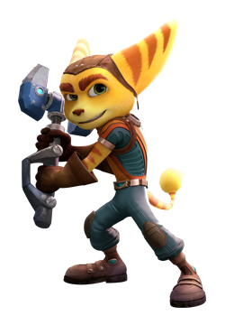
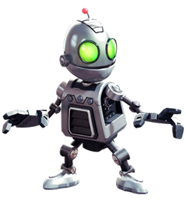
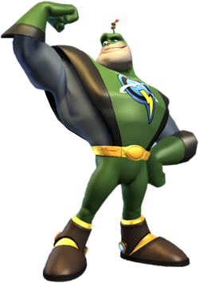
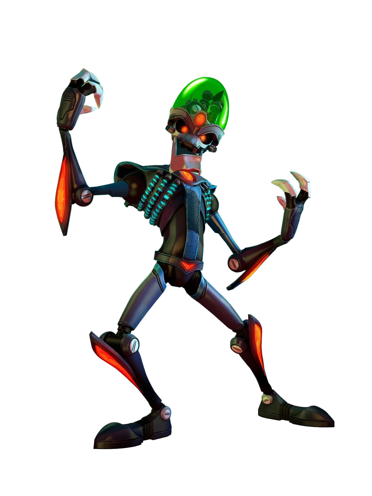
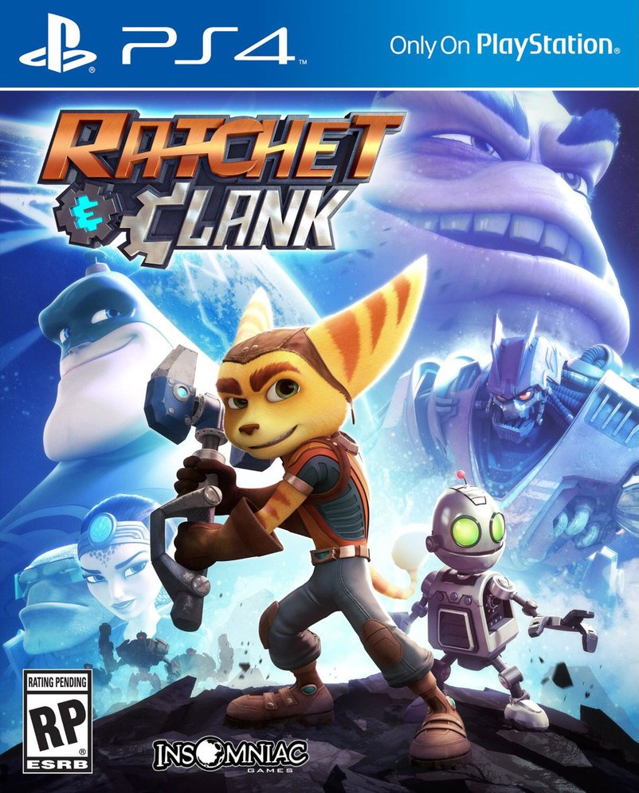

¿Qué es "Ratchet and Clank" como franquicia de videojuegos?
Ratchet & Clank es una serie de videojuegos de acción, plataformas y disparos en tercera persona . La franquicia fue creada y desarrollada por Insomniac Games y publicada por Sony Interactive Entertainment paraconsolas PlayStation , como PlayStation 2 , PlayStation 3 , PlayStation 4 y PlayStation 5 , con la exclusión de Size Matters y Secret Agent Clank , que fueron desarrolladas por High. Impact Games para PlayStation Portable . La serie es exclusiva de las plataformas Sony y la propiedad intelectual es propiedad de Sony Computer Entertainment. Una adaptación cinematográfica animada producida por Rainmaker Entertainment y Blockade Entertainment y distribuida por Focus Features y Gramercy Pictures fue lanzada el 29 de abril de 2016.
Los juegos tienen lugar en un entorno de ciencia ficción y siguen las aventuras de Ratchet (un humanoide felino conocido como Lombax , que es un mecánico ) y Clank (un robot Zoni diminuto y sensible ) mientras viajan por el universo, salvándolo del mal. fuerzas que lo amenazan constantemente. La serie se destaca por la inclusión de muchas armas y dispositivos exóticos, únicos y exagerados, un concepto que Insomniac Games ha expandido a sus otros juegos.

Entregas principales de la saga
En esta lista se encuentran los títulos principales contando el rebut antecesor del próximo juego:
- Ratchet & Clank (2002)
- Ratchet & Clank 2: Going Commando (2003)
- Ratchet & Clank 3: Up Your Arsenal (2004)
- Ratchet & Clank (2016)
Personajes principales a lo largo de la saga
- Ratchet: Es el principal protagonista de la saga de Ratchet & Clank y uno de los últimos, si no es el último, Lombax con vida en el universo.
Nació en el planeta Fastoon, pero se crió en un taller del planeta Veldin tras la muerte de sus padres a manos del Emperador Percival Tachyon.
Durante Ratchet & Clank, Ratchet desconocía completamente lo que existía más allá de su planeta, por lo que al construir una nave y conocer a Clank, este se embarcó en una gran aventura en la que conoció a personas interesantes y celebridades, incluyendo el mismísimo Capitán Qwark, quien no resultó ser mas que un farsante que trabajaba para el Presidente Drek. Ratchet consiguió derrotarlo luego de un gran esfuerzo salvando su planeta y convirtiéndose en una celebridad heroica.

- Clank:
Clank, cuyo verdadero nombre es XJ061, era un robot y el mejor amigo de Ratchet, ademas de ser el co-protagonista de Ratchet & Clank. Clank nació en el planeta Quartu, pero su alma fue creada en el Gran Reloj por el Zoni más (brillante/inteligente) de todos; Orvus. Su voz es interpretada por David Kaye en todas sus apariciones.
Durante Ratchet & Clank, Clank escapó de la fábrica en que se fabricó, con la misión de salvar el sistema solar del Presidente Drek. Al estrellarse en el Planeta Veldin, el se quedó inconsciente y fue rescatado por Ratchet. Tras informarle la situación y buscar juntos al Capitán Qwark, ambos lo localizaron, pero resulto estar trabajando para Drek. Habiendo perdido a un aliado pero teniendo a Ratchet a su lado, ambos trabajaron juntos para detener al Presidente. Venciendo a varios enemigos que se interpusieron y conociendo personas que mejoraron al robot, ambos consiguieron salvar el planeta de Ratchet y poner fin a la amenaza blarg, convirtiéndose en celebridad.

- Capitán Qwark: El Capitán Copérnico Leslie Qwark era un "héroe cobardica" nativo del planeta Kerwan que derrotó a villanos como el Capitán Estrella Negra y el Dr. Nefarius, ganando el título de héroe en la Galaxia Solana. Es uno de los principales antagonistas de Ratchet & Clank, convirtiéndose en el principal villano de Totalmente a tope. A partir de Pon tu Arsenal a tope, pasa a ser un anti-héroe hasta Atrapados en el tiempo, en donde se convierte en el tercer personaje heroico más importante después de Ratchet y Clank. Su voz es interpretada por Jim Ward en todas sus apariciones.
Durante Ratchet & Clank, Clank vio en el Capitán Qwark la salvación ante la amenaza de la destrucción del sistema solar por culpa del Presidente Ejecutivo Drek. Sin embargo, resulto que Qwark estaba trabajando con Drek con la intención de generar más fama y fortuna, por lo que traicionó a Ratchet y Clank en un intento de matarlos en dos ocasiones, pero terminó fracasando y trabajando para artilugios de Gadgetron en el mercado negro.
Qwark terminó siendo profundamente humillado por el dúo de héroes y pronto su vida se vino abajo cuando comenzó a acumular grandes deudas de billones de guitones, provocando que fuese buscado por toda la galaxia, teniendo que escapar a otra.

- Contrabandista: El Contrabandista era un forajido que vendía productos del mercado negro, y siempre iba acompañado de su loro. Aparece por primera vez en Ratchet & Clank: Armados hasta los dientes en el Planeta Cobalia, que fue encontrado en el puerto espacial, ya que Ratchet y Clank buscaban una nave para salir de allí. Siempre ayudaba a cualquiera por una "pequeña compensación económica", o por un favor. El Contrabandista también te permitía cambiar almas de Leviatán por guitones.

¿Qué es "Ratchet and Clank (2016)"?
Ratchet & Clank es un videojuego perteneciente al género de acción-aventura desarrollado por la empresa Insomniac Games, publicado por Sony Computer Entertainment. Es una reinvención del primer videojuego de la serie, basado en la adaptación cinematográfica de Rainmaker Entertainment y Blockade Entertainment. El juego se planeó originalmente para ser lanzado en la consola PlayStation 4 en el año 2015, pero se retrasó, junto con la película, hasta abril del 2016 con el fin de darle a la película una mejor campaña de mercadotecnia y al juego un tiempo de pulido adicional.
En contraste con la película en la que se basó,3 Ratchet & Clank recibió críticas positivas luego del lanzamiento, y los críticos elogiaron especialmente la jugabilidad general, las imágenes, las armas, el diseño mundial y los controles.

Página oficial de "Ratchet and Clank Rift Apart"
Página Playstation (Ratchet and Clank Rift Apart)
Regresar a la página principal